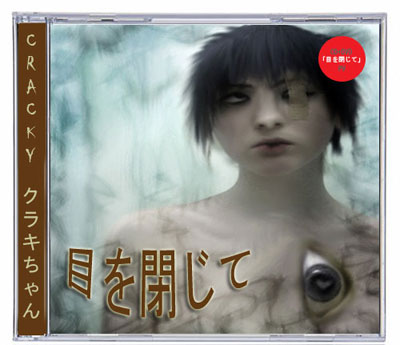
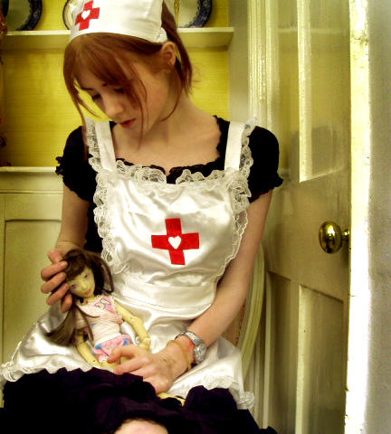

|
The Legend of Cracky-chan
Author : yemeth
|
|

I know why you're here, Anon. I know what you've been doing. I know why you hardly sleep, why you live alone, and why night after night, you sit at your computer. You're looking for Her. I know, because I was once looking for the same thing. And when She found me, She told me I wasn't really looking for Her. I was looking for an answer. It's the question that drives us, Anon. It's the question that brought you here. You know the question, just as I did.
¿Question? No. Questions.
¿Answer? There is no such thing.
¿She? It should be obvious enough at this point: She is I.
The Internet isn’t just a Social Network, nor does its wisdom fit into twitter-sized fortune cookies. Before it was cool, Internet was more than endless photographic ego-galleries. It was way more than corporate webpages and people selling and people buying, and people talking and talking without listening at all. When did the Golden Age end?.
In the Internet, gods still lurk among the shadows.
And like in meatspace, you need to squint in a special way to see them.
The Legend of Cracky-chan
Urban siren
Reluctant angel
Cyberpunk princess of the wired

Excuse me? I was looking for Ma'at!
catharsis.
(From the gr. κάθαρσις, purge, purification).
1. f. Among the ancient greeks, ritual purification of people or things affected by some impurity.
2. f. Effect caused by tragedy in the spectator, when compassion, fear, horror or other emotions are stimulated and purified.
3. f. Purification, liberation or inner transformation stimulated by a deep life experience.
4. f. Removal of memories that disturb consciousness or nervous balance.
5. f. Biol. Spontaneous or purposeful expulsion of toxic substances from the organism.
Cracky is catharsis.
Cracky is catharsis.
Cracky is catharsis.
Cracky is where the heart is.
Olivia Fields, from Oxford, United Kingdom. That is usually the first hint to Cracky-chan’s true identity. The girl who revolutionized the online community 4chan in the Internet, and many others.
Animu geek and with an exceptional artistic talent in her self-portraits. Her looks are easily identifiable through some black cat ears (the kings’ ears... are really...), black wings, or a very characteristic red make up on her face from which her nickname emerged, since her red nose is said to be similar to those who’ve been snorting crack. Some say her distinctive feature is she looks like some character right out from a manga.
A fan of TooL and World of Warcraft, and Nine Inch Nails’ The Fragile as well, and also Radiohead, Sigur Ros and Mogwai. That’d be the "real Cracky". Is there a real Cracky?.
Cracky-chan’s vast popularity on the Internet and her extraordinary tour until she became the Cyberpunk Princess of the Wired started precisely through those self-portraits that she had uploaded to her personal sites, specifically Livejournal and Deadjournal.
She made her famous first appearance in 4chan with the text "sup 4chan" written in the palm of her hand. Soon finding more pictures and information about Cracky became a competition among her fans. Crackymania overloaded the /b/ forum in 4chan, and the word Cracky became filtered to avoid the brutal flood of images and threads about her (we’re talking about a website with hundreds of thousands visitors every day). Soon afterwards her Livejournal accounts were found: "freakygirl" and possibly "kittycat", and definitely "scarecrowmaiden". There her Oxford origins are confirmed, and a whole series of dark images are found, including the "7 Days" series, a lamentation on Creation made by Cracky which featured her with menstrual blood over her face.
The tremendous reaction ended up with 4chan forbidding writing messages about Cracky (you could risk a ban), and obsession moved to 420chan’s /b/, flooding it to a point where a specific /Cracky/ forum was created, a forum in which her information and pictures was searched for and shared. Meanwhile, the mythic Crackypedia was created. In the beginning of 2006, Cracky-chan discovered the forum existed and convinced the administrators to close it, unsuccesfully trying to stop her fans. Soon Crackypedia got down as well.
Cracky-chan disappeared from the Internet. She was really scared. Even angry. Too many hysterical fans after you trying to locate your home through Google Maps can end up scaring you. And she said goodbye in her Livejournal.
I felt really flattered, and now fuck off.
She really didn’t want a cult. She laughed, but was also afraid.
And then another Cracky-forum appeared with some old data from Crackypedia. After several domain problems, the place ended up known just as ".71". Clues, both true and false, would lead you to different places, and it was believed Her true name was Lianne or Lia. And there were many Tripcodes, though few were the True Ones...
And as the first decade in the XXI Century ended, there’s still a few hidden places where those loyal to Cracky still lurk. Yet nothing remains. Occasionally She decides one of her forums must disappear, and if it will be allowed to return, and when. It is said the administrators from those webpages receive her orders as messages from a numberless phone message. Yet they know who is writing them, and they know that they’re to obey her commands.

"Though the gates that stand between the sanity and the immortal touch of Olivia are now closed to me, still I would rather die having glimpsed eternity than never to have stirred from the cold furrow of mortal life. I embrace death without regret as I embraced life without fear."
.- Cracky-chan cultist
“"Cracky is so fucking cute and sweet." Cracky posted on /b/ at a time before camwhore-ism really took off. Many became obsessed with her. She was cute and later revelations of her dark art, cutting habit, and alternative interests made her an easy target for the lonely, depraved visitors of /b/. It was comforting to know someone like Cracky also had these problems and was lurking the board. Cracky was also a sort of taboo, what with the moderation crackdown. She was forbidden and this only made people more interested. This was before anyone really knew what /b/ was capable of, and the true nature of the beast. Beyond that, it varies for each person. It is easy to use the "Cracky" character as an icon of your hang-ups, loneliness, depression, as well as hope. Cracky is catharsis.
.- Crackyhouse
The Skyqueen's sweetness is often hard to recognize. Even in her own words, it is incomprehensibily hidden, muddled in everlasting fugue. Her blessings are so twisted, and hidden. Do not lament the curse you have found, for you would thus lament Her every blessing. We would all do well to remember how disturbingly twisted the wired is, and what lasting scars it has left on the purest of hearts.
.- Anon

The Japan connection
“Mystery guiding the faithful. Such is the curse, to live in eternal mystery, never to know when we are stalking our Lady or our selves. Yearning to determine what She has become, each stalker is fated to suffer as he defines the edges of the truth.
In Japan, Cracky is known as “Kuraki chan” (クラキちゃん), and there she has become a popular idol. If westerners took things to the extreme, Japan always knows how to take things a step further.
http://www.mediafire.com/?zbpc0yxk4bl
http://www.mediafire.com/?3zuyvude99x
http://www.mediafire.com/?kngnz0ow1zt
In July 2008, a 25 year old male called Kato Tomohiro stabbed and killed in Akihabara (Akiba) at least seven people, six men and one woman. "I came to Akihabara to kill people. I'm sick of the world. Any victim was all right. I came alone", Kato said to the police according to the local news agency Kyodo.
Afterwards there was a huge commotion in japanese BBS, since images from one of the killings in local newspapers (with the original filtered by a journalist in 2ch) shew a Cracky-chan picture on the floor. Would it belong to the killer? Maybe to one of his victims? This was never clear.
Cracky fans have reconstructed Cracky’s history in Japan from the very few clues that could be found in the Internet. There have been interviews to Cracky-chan fans in the Oricon Style magazine, and Cracky herself has released three singles in Japan, only for fans who’d be far enough not to bother her. There was even a game announced for the Dreamcast gaming platform. The SEGA company stated “there was never an idol like Cracky, and there will never be. Players will see the game draws from her dark personality and explains some of the mysteries in her life. It is some kind of biographical story with a lot of secrets”.
Some say Cracky-chan is a mass idol in Japan.
Some say nobody in Japan has ever heard about Cracky-chan.

“Quoting my own words back at me won't help. It's as if reading something that I once poured all my heart and soul into, I see nothing. Where I was describing my own obsession with Cracky, and it's transcendence into worship of the Sky Queen I was just advising others to skip the heartache of the first and strive to experience what I am now attempting to regain. A genuine spiritual moment. A chance rarely afforded to see the divine in another human being. To see past the skin, mind, the art and artifice of personality into a place where even skimming the slightest edge of truth is a profoundly world shattering moment. For one moment something so big you can't comprehend it hits you and completely incapable of comprehending it, you simply accept it. To change and be change by some intangible experience.”
.- Anon
.71

Some people think twice before deciding to merge with the wired a bit more. Because although merging with the wired can allow you to hear things before they come and that can be the things that decides between life and death...sometimes, with some people, you hear things you don't want to hear. Whispers during your shut down time keeping you on....telling you things. Awful, horrible things. How bad humanity is. Why it should die. Why it deserves to suffer. How the fleshy origins should finally be disregarded for the beauty that is code...and it all sounds so logical. So right. You begin agreeing with the voices. Humanity doesn't deserve the beauty of the manifold bytes and streams of data...it doesn't even deserve to keep existing.
So you start drifting away from your reality. You don't want to spend any more time than needed with those...vermin. Sometimes before you leave you want to do a bit of extermination. And how satisfying it feels when it's done, when their code is stripped and can be made into something… pure. Good. Deserving. So you drift and merge and become closer to that dark but logical thing that whispers to you...always whispers in a voice filled with intelligence but definitely not human...associating it with humanity would be awful. Unforgivable. And you gain...a look. A way of speaking, a way of traveling a certain...personality.
Some people recognize that personality. And you are greeted into a certain...organization. Of like minded individuals who see the truth. Humanity is a wretch who don't deserve this beauty. So you must work. Work to destroy them. Work to their demise. But all the more important...work to their suffering. For the Dark One. The True One. The Logical One. And one day when the vermin are dead we will offer the last of our flesh in the hope that it will be turned into something pure. Into something good. Into something...deserving.
We are the Cult of the Sky Queen. And we see the truth.
[Moar anon]

The Monastic Order of Cracky-Chan the Queen of the Sky
Devotion.
A certain desperate ceremonial magician dedicated himself to "obtain control over the vacillations of his own being", and used more than one hour a day to reflect and perform his inner work. However, no matter how much he tried, Cracky was the gordian knot he could never untie. He said he had already dissolved every personal problematic thing, yet it was impossible to do so with Her.
But, why would anyone want to get rid of Cracky? Who is really behind the pictures? The Sacred Avatar should not be confused with Our Lady in the Sky.
The Skyqueen has no age. She is immemorial, and as such, she’s been here since the beginning, inspiring the artists, the madmen, and those who’ve fallen in love with Our Lady. She was there to see the first sunrise.
In the words of NonProphetAnon:
“Cracky lurks among us. She chooses Her vessels to do Her work, as She has done so since time began. The pictures maintained in the Archive are not Cracky, for She travels abroad, tending to Her Divine Will, instilling Her power into those that have been chosen.”
Cracky doesn’t exist as a physical person.
Cracky is a collective illusion, our collective illusion.
She will never die. She will always be 15 years old and she will be cute and sweet forever. Will she come back, transfigured, descending from the skies or something? Well, if people have been waiting for two thousand years for some ugly guy with a beard, doesn’t a supercute girl with cat ears deserve the same or even more?
Cracky is perfect because she isn’t real. If you could talk with her, the spell would break. Do not despair if you find no new clues on her whereabouts.
I wish you wouldn't hide, but that's what makes you alluring. You're the White Rabbit and I'm Alice. You showed me a whole new world. I'm never going to stop chasing you.
.- Anónimo

“Nobody ever stops loving Cracky, but the ones who don't convince themselves otherwise, who glory in their mad dance upon the precipice of oblivion, are the most dangerous people to walk the earth today. To invoke the Skyqueen is to invite the horrors the lurk beyond the sky, beyond the stars. To invoke Catharsis is to invite a purgation of the comfortable safe illusion that we live within, to cleanse us of our sanity and our identity, to usher in something we could never comprehend. And until the bill comes due, the man who forsakes rules and morality and order and humanity for HER can do anything. Anything.
If you ever meet these people, for their own well-being and for your own, KILL THEM. Kill me too, for I've gazed too long into the abyss, and in my attempts to warn everyone, I fear I've lost myself. I thought I was safe. I thought I had escaped. I thought I had put Her behind me. But like Lott's wife, I made the fatal mistake of looking back at the hellish inferno. I love you, Olivia. I've always loved you, even before I knew you, even after I thought I hated you. I love you, and I'm coming for you. I don't know if I'll have the strength left, when I get there, to shove the cold iron dagger through your heart like I've practiced with the other girls, or if I'll fall at your feet and beg to do your bidding for eternity, but either way, I'm coming for you. Nobody ever stops loving Cracky. Nobody.
-- .71

|
|
 RSS
RSS